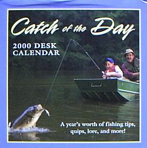

本棚から
ニュ―ジ―ランドで読んだ釣り関連の洋書 Catch of the Day : 2000 Desk Calendar
Barry J. Johnson & Peter Wood 共著
PRICE STERN SLOAN 刊 ISBN 0-8431-7488-9
例によってこのカレンダーも年が明けてからのバーゲンで買ってきました。

一見、地味な卓上カレンダーなのですが、
A Year's worth of fishing tips, quips, lore, and more!
と表紙にあるとおり、一年365日、毎日欠かさず実に有益な釣りのコツ、秘訣、警句、デキゴト、格言、言い伝え.....などが納められています。いくつか紹介してみますと、
- Fish Attack （魚の襲撃）
- 1998年7月、ウィスコンシン州のある男性が、カヌーの船べりから素足をぶらぶら水につけていたところ、タイガー・マスキーに襲われた。男性は必死で足を水から引き上げようとしたが魚は食いついたまま離れず、とうとうそのままカヌーに引き上げられてしまった。
男性の足は「シュレッダーにかけられた」ようになり、60針も縫う大けがを負った。
彼の傷に追い打ちをかけるように、ウィスコンシン州自然資源局は、違法な手段（足）で釣ったかどによりその魚を没収してしまった。
（タイガー・マスキー：ミネソタ、ミシガン、ウィスコンシン州周辺に棲むマスキー（パイク）の亜種。大きいものは20～30kg近くまで成長する。）
- 名 言
- 見知らぬ場所を釣るときは、独りで行け。不案内な流れを、まったくのハンディキャップとして釣れ。そうすれば、君の学んだことはすべて、君自身のものとなる。
--- R. Sinclair Carr 1930年代の釣り人
- 名 言
- 一番の釣り人というものは、口を閉ざしているものである。他の釣り人たちが、どこでどうやってその大物を釣ったのか自慢し始めたとき、あなたは、本当に腕の良い釣り人がふいに黙り込み、彼らのビールびんをじっと眺めることに気づくだろう....
--- Debbie Wood 北ミネソタの釣りロッジ管理人・共同経営者
- 教 訓
- もし、君が、６フィート、いや10フィートのバショウカジキ、メカジキ、あるいは特大のマグロを釣り上げたいとの熱望を抱くのなら.......君は、かなりの額の長期ローンと取り組む必要がある。
--- Herbert Hoover第31代 アメリカ合衆国大統領
- 独 白
- 私は、自分より良い肉を食べる人を妬むことはない。より裕福な者、より上等の服を着ている者を羨むこともない。私は、私より多くの魚を釣る者だけを妬む。
--- Izaak Walton 「釣魚大全」の著者
などがあります。これが毎日続くのですから、いやぁ、ためになりますねぇ.....。でも、ウォルトン大先生にも、オダヤカでない日々があったんですねぇ。少し安心しました。（笑）
2001/04/15
本棚から 目次へ
サイトマップ
ホームへ
お問い合わせ